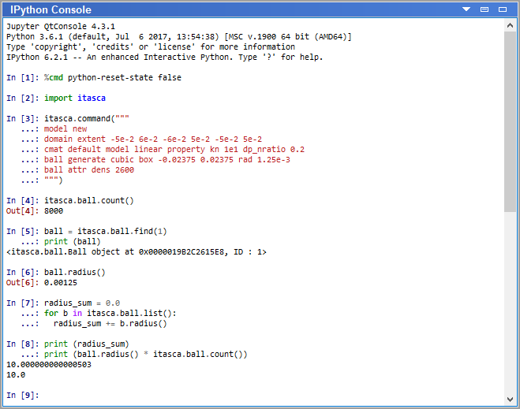

IPython 窗格


图 1：IPython 窗格。
程序中的 IPython 窗格是 IPython 的一种实现。IPython 是一种 shell 实用工具（除其他功能外），使用户可以从程序界面内运行基于 Python 的脚本。若没有它，与模型相关的 Python 脚本就需要在单独的 shell 中运行。有关 IPython 的完整信息，请参见 IPython官网（https://ipython.org/）。
以下关于 IPython 的说明引用自 IPython官网（https://ipython.org/） 首页。
IPython 为交互式计算提供了丰富的架构，包括：
- 强大的交互式 shell。
- 用于 Jupyter 的内核。
- 支持交互式数据可视化以及使用 GUI 工具包。
- 灵活、可嵌入的解释器，可加载到你自己的项目中。
- 易于使用的高性能并行计算工具。
就 Itasca 软件而言，第一点是关键：它提供的正是 shell，使得可以在建模过程中执行 Python 脚本。IPython 窗格提供的 IPython shell 与程序随附的 Python 3.6 发行版兼容并已连接，因此无需进行配置。
用户还会注意到，就程序中的窗格而言，IPython 窗格按设计是“极简”的。它不在工具栏上提供任何工具，也不连接许多菜单命令。不过，它确实通过窗格中的右键单击提供文本选择和复制/粘贴功能以及少数其他基本操作。
要进一步探索 IPython 窗格，现有的任何教程都会充分演示其操作和功能。
- 在 PFC 中使用 Python（Using Python with PFC）
- 使用 PFC 和 NumPy 进行数组风格编程（Array Style Programming with PFC and NumPy）
- 使用导入几何的 UCS 试验（UCS Test With Imported Geometry）
- 使用 SciPy 及其他第三方 Python 包（Using SciPy and Other Third-party Python Packages）
- 使用 PySide 进行 GUI 编程（GUI Programming with PySide）
这些教程之后是一页常见问题解答（Frequently Asked Questions），其中解答了在熟悉 Python 和 IPython 窗格后可能出现的疑问。
| 这些内容对您有帮助吗？… 版权与免责声明 | FLAC3D © 2019, Itasca | 原文更新于 2020 年 10 月 8 日 |